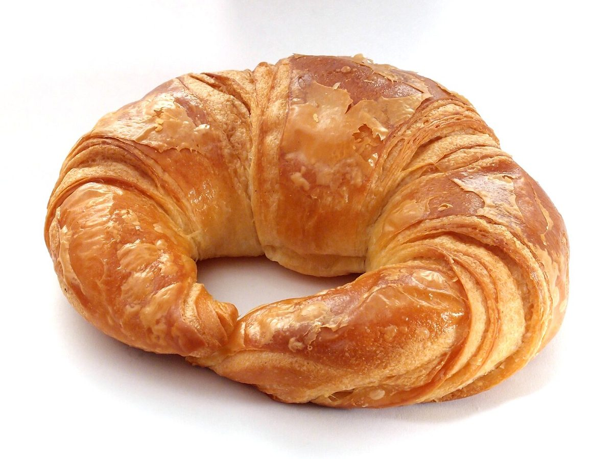

制作側の連想
アナログテスターの部位を、配置図にしてみる
このサイトは、針で値を示すタイプのテスターを図にしたつもりで作りました。六つの部位に番号をふり、上の図と並べています。制作側の連想で、お店の理念・由来とは無関係です。実際の測定器の仕様を示すものでもありません。
凡例
六つの部位
- 1指針メーターの中で振れて、測った値を目盛りの上で示す細い針。
- 2目盛板弧の形に目盛りを刷った、メーターの文字盤。
- 3ゼロ調整ネジ針の位置を零に合わせるための、小さなネジ。
- 4レンジ切替ダイヤル測る量や範囲を選ぶための、回すつまみ。
- 5テストリード測る相手に当てる、先の尖ったコード。赤と黒の二本組。
- 6端子(ジャック)テストリードをつなぐ、本体側の差し込み口。
ギャラリー(イメージ)
パンとコーヒー豆の写真



写真はパンとコーヒー豆のイメージです。お店のものではなく、お店で提供している商品を示すものでもありません。
ご案内
お店のこと(確認できたものだけ)
| 所在地 | 〒893-0057 鹿児島県鹿屋市今坂町9982-14 |
|---|---|
| 電話 | 準備中 |
| 営業時間 | 準備中 |
| 定休日 | 準備中 |
| ご予約 | 準備中 |
| 駐車場 | 準備中 |
| SNS | Instagram @oimodecafe_418 |